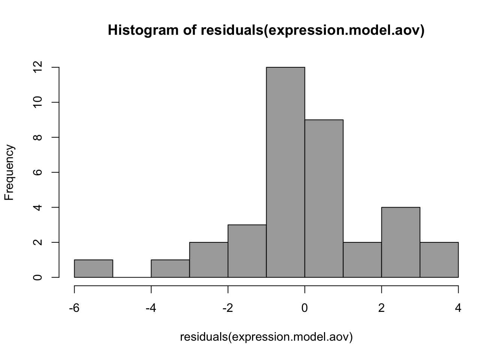
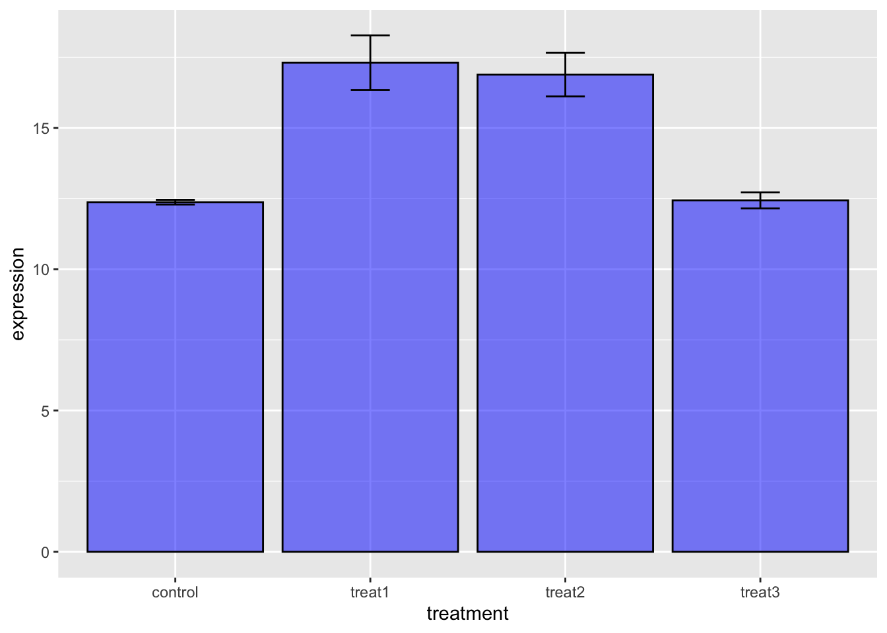

One Way ANOVA
Bill Perry
2018/04/30
##Load libraries We will read in the main files and load the libraries as we have worked with so far.
# #Install Packages ----
# install.packages("tidyverse")
# install.packages("lubridate")
# install.packages("scales")
# install.packages("readxl")
# install.packages("survminer")
# install.packages("survival")
# install.packages("patchwork")
# install.packages("broom")
# ANOVA specific
# install.packages("car")
# install.packages("emmeans")
# install.packages("multcompView")
#Load libraries ----
library(tidyverse)
library(lubridate)
library(scales)
library(readxl)
library(skimr)
library(broom)
library(janitor)
# library(zoo)
library(patchwork)
library(car)
library(emmeans)
library(multcompView)Read in the file
# read in the file
gene_exp.df <- read_csv("data/gene_data.csv") %>%
clean_names() ##
## ── Column specification ────────────────────────────────────────────────────────
## cols(
## individual = col_double(),
## replicate = col_double(),
## control = col_double(),
## treat1 = col_double(),
## treat2 = col_double(),
## treat3 = col_double()
## )glimpse(gene_exp.df)## Rows: 9
## Columns: 6
## $ individual <dbl> 1, 2, 3, 4, 5, 6, 7, 8, 9
## $ replicate <dbl> 1, 1, 1, 2, 2, 2, 3, 3, 3
## $ control <dbl> 12.59708, 12.48503, 12.04311, 12.46447, 12.02386, 12.65620,…
## $ treat1 <dbl> 20.87269, 19.57602, 15.66664, 15.70462, 20.20846, 18.15278,…
## $ treat2 <dbl> 14.94204, 15.90944, 13.39281, 17.80308, 20.25343, 19.59284,…
## $ treat3 <dbl> 11.90506, 12.42411, 12.34661, 11.93034, 11.78713, 12.07246,…##Summary Statistics for the better look
# the data you want to look at
skim(gene_exp.df)| Name | gene_exp.df |
| Number of rows | 9 |
| Number of columns | 6 |
| _______________________ | |
| Column type frequency: | |
| numeric | 6 |
| ________________________ | |
| Group variables | None |
Variable type: numeric
| skim_variable | n_missing | complete_rate | mean | sd | p0 | p25 | p50 | p75 | p100 | hist |
|---|---|---|---|---|---|---|---|---|---|---|
| individual | 0 | 1 | 5.00 | 2.74 | 1.00 | 3.00 | 5.00 | 7.00 | 9.00 | ▇▇▃▇▇ |
| replicate | 0 | 1 | 2.00 | 0.87 | 1.00 | 1.00 | 2.00 | 3.00 | 3.00 | ▇▁▇▁▇ |
| control | 0 | 1 | 12.37 | 0.24 | 12.02 | 12.16 | 12.46 | 12.53 | 12.66 | ▅▂▂▅▇ |
| treat1 | 0 | 1 | 17.31 | 2.90 | 12.27 | 15.67 | 18.15 | 19.58 | 20.87 | ▂▇▁▅▇ |
| treat2 | 0 | 1 | 16.89 | 2.31 | 13.39 | 14.94 | 17.33 | 18.06 | 20.25 | ▇▇▃▇▇ |
| treat3 | 0 | 1 | 12.44 | 0.85 | 11.79 | 11.93 | 12.33 | 12.42 | 14.58 | ▇▅▁▁▂ |
##Look at the data We could do this in the wide format but it is a lot easier in long format ## Wide to long format
# this will add an index to the dataframe so you know what individual is which
gene_exp_long.df <- gene_exp.df %>%
gather(
treatment, # this will take all the row headings into a column
expression, # this will convert all the measures into a column called expression
-replicate, # the - sign tells tidyr not to move those columns
-individual
)
glimpse(gene_exp_long.df)## Rows: 36
## Columns: 4
## $ individual <dbl> 1, 2, 3, 4, 5, 6, 7, 8, 9, 1, 2, 3, 4, 5, 6, 7, 8, 9, 1, 2,…
## $ replicate <dbl> 1, 1, 1, 2, 2, 2, 3, 3, 3, 1, 1, 1, 2, 2, 2, 3, 3, 3, 1, 1,…
## $ treatment <chr> "control", "control", "control", "control", "control", "con…
## $ expression <dbl> 12.59708, 12.48503, 12.04311, 12.46447, 12.02386, 12.65620,…Look at data
glimpse(gene_exp_long.df)## Rows: 36
## Columns: 4
## $ individual <dbl> 1, 2, 3, 4, 5, 6, 7, 8, 9, 1, 2, 3, 4, 5, 6, 7, 8, 9, 1, 2,…
## $ replicate <dbl> 1, 1, 1, 2, 2, 2, 3, 3, 3, 1, 1, 1, 2, 2, 2, 3, 3, 3, 1, 1,…
## $ treatment <chr> "control", "control", "control", "control", "control", "con…
## $ expression <dbl> 12.59708, 12.48503, 12.04311, 12.46447, 12.02386, 12.65620,…##Convert to factors So to do this the experiment and individuals are numeric and need to be converted to categories or factors…
Wide data to factors
# convert things to factors or do calculations
gene_exp.df <- gene_exp.df %>%
mutate(
replicate = as.factor(replicate),
individual = as.factor(individual)
)
# now look at it
skim(gene_exp.df)| Name | gene_exp.df |
| Number of rows | 9 |
| Number of columns | 6 |
| _______________________ | |
| Column type frequency: | |
| factor | 2 |
| numeric | 4 |
| ________________________ | |
| Group variables | None |
Variable type: factor
| skim_variable | n_missing | complete_rate | ordered | n_unique | top_counts |
|---|---|---|---|---|---|
| individual | 0 | 1 | FALSE | 9 | 1: 1, 2: 1, 3: 1, 4: 1 |
| replicate | 0 | 1 | FALSE | 3 | 1: 3, 2: 3, 3: 3 |
Variable type: numeric
| skim_variable | n_missing | complete_rate | mean | sd | p0 | p25 | p50 | p75 | p100 | hist |
|---|---|---|---|---|---|---|---|---|---|---|
| control | 0 | 1 | 12.37 | 0.24 | 12.02 | 12.16 | 12.46 | 12.53 | 12.66 | ▅▂▂▅▇ |
| treat1 | 0 | 1 | 17.31 | 2.90 | 12.27 | 15.67 | 18.15 | 19.58 | 20.87 | ▂▇▁▅▇ |
| treat2 | 0 | 1 | 16.89 | 2.31 | 13.39 | 14.94 | 17.33 | 18.06 | 20.25 | ▇▇▃▇▇ |
| treat3 | 0 | 1 | 12.44 | 0.85 | 11.79 | 11.93 | 12.33 | 12.42 | 14.58 | ▇▅▁▁▂ |
Long data to factors
#need to make treatment a factor
gene_exp_long.df <- gene_exp_long.df %>%
mutate(
replicate = as.factor(replicate),
individual = as.factor(individual),
treatment = as.factor(treatment)
)
# now look at it
skim(gene_exp_long.df)| Name | gene_exp_long.df |
| Number of rows | 36 |
| Number of columns | 4 |
| _______________________ | |
| Column type frequency: | |
| factor | 3 |
| numeric | 1 |
| ________________________ | |
| Group variables | None |
Variable type: factor
| skim_variable | n_missing | complete_rate | ordered | n_unique | top_counts |
|---|---|---|---|---|---|
| individual | 0 | 1 | FALSE | 9 | 1: 4, 2: 4, 3: 4, 4: 4 |
| replicate | 0 | 1 | FALSE | 3 | 1: 12, 2: 12, 3: 12 |
| treatment | 0 | 1 | FALSE | 4 | con: 9, tre: 9, tre: 9, tre: 9 |
Variable type: numeric
| skim_variable | n_missing | complete_rate | mean | sd | p0 | p25 | p50 | p75 | p100 | hist |
|---|---|---|---|---|---|---|---|---|---|---|
| expression | 0 | 1 | 14.75 | 3 | 11.79 | 12.34 | 13.02 | 17.45 | 20.87 | ▇▂▁▂▂ |
##Now to graph the long format data
# Note the new format allows us to make coding a lot faster
gene_exp_long.df %>%
group_by(treatment) %>%
ggplot(aes(treatment, expression)) +
geom_boxplot()One way Anova
Great Reading
A Great coverage of this material is Dolph Schluters page https://www.zoology.ubc.ca/~schluter/R/fit-model/
The key thing here is the use of the car package as it is essential for unbalanced designs and the use of Type III sum of squares otherwise Type I sum of squares are used which is rarely good. Weather to use Type II or III is a contentious issue and we will just go with Type III for all of our work
Bartlets test for homogeneity of varaince
#Compared variances uisng Bartlet test
# significant means they differ in varainces but this is close
bartlett.test(expression ~ treatment, data=gene_exp_long.df)##
## Bartlett test of homogeneity of variances
##
## data: expression by treatment
## Bartlett's K-squared = 34.668, df = 3, p-value = 0.0000001432ANOVA
Now we can run an ANOVA as long as the categories we are testing are factors. When doing this we will test to see if any of the means are different but will not be able to tell what is different yet. Thatis the next step
# ANOVA - ONE WAY
# you can do an anova as an anova and not the linear model
#Run the anova and store it in the model in Values
expression.model.aov = aov(expression ~ treatment, data=gene_exp_long.df)
#Obtain the anova table
anova(expression.model.aov)## Analysis of Variance Table
##
## Response: expression
## Df Sum Sq Mean Sq F value Pr(>F)
## treatment 3 199.26 66.421 18.334 0.0000004189 ***
## Residuals 32 115.93 3.623
## ---
## Signif. codes: 0 '***' 0.001 '**' 0.01 '*' 0.05 '.' 0.1 ' ' 1Save the model for use in word
# save model to a text file for excel or whatever
tidy(expression.model.aov)## # A tibble: 2 x 6
## term df sumsq meansq statistic p.value
## <chr> <dbl> <dbl> <dbl> <dbl> <dbl>
## 1 treatment 3 199. 66.4 18.3 0.000000419
## 2 Residuals 32 116. 3.62 NA NA#You can copy this out or save it as an object and then save it as a csv file
# save the model
# tidy_expression.model.aov <- tidy(expression.model.aov)
# write_csv(expression.model.aov, "tidy_anova_expression.csv")Plot Residuals
# Plot residuals
#Base R plots
plot(fitted(expression.model.aov), residuals(expression.model.aov))Histogram of residuals
#Histogram of residuals
hist(residuals(expression.model.aov),
col="darkgray")
Check for Normality
# check for normally distributed data
qqnorm(expression.model.aov$res)Statistical Test of Normality
#Test for normality of residuals
shapiro.test(expression.model.aov$res)##
## Shapiro-Wilk normality test
##
## data: expression.model.aov$res
## W = 0.9572, p-value = 0.176Post F tests of an ANOVA
# Post F tests
# Comparisons of species
lsm = emmeans(expression.model.aov,
"treatment",
adjust="bonferroni")
### Means sharing a letter in .group are not significantly different
#Note that this requires multcompView
multcomp::cld(lsm,
alpha=.05,
Letters=letters)## treatment emmean SE df lower.CL upper.CL .group
## control 12.4 0.634 32 10.7 14.0 a
## treat3 12.4 0.634 32 10.8 14.1 a
## treat2 16.9 0.634 32 15.2 18.6 b
## treat1 17.3 0.634 32 15.6 19.0 b
##
## Confidence level used: 0.95
## Conf-level adjustment: bonferroni method for 4 estimates
## P value adjustment: tukey method for comparing a family of 4 estimates
## significance level used: alpha = 0.05# Now you have a statistical test of how the means compare
gene_exp_long.df %>%
group_by(treatment) %>%
ggplot(aes(treatment, expression)) +
geom_boxplot()
# what if you wanted a bar plot
ggplot(gene_exp_long.df, aes(x= treatment))+
stat_summary(aes(y=expression), fun.y=mean, geom='bar', color="black",
fill="blue", alpha=0.5) +
stat_summary(aes(y=expression), fun.data = mean_se, geom = "errorbar", color="black", width=0.2)## Warning: `fun.y` is deprecated. Use `fun` instead.